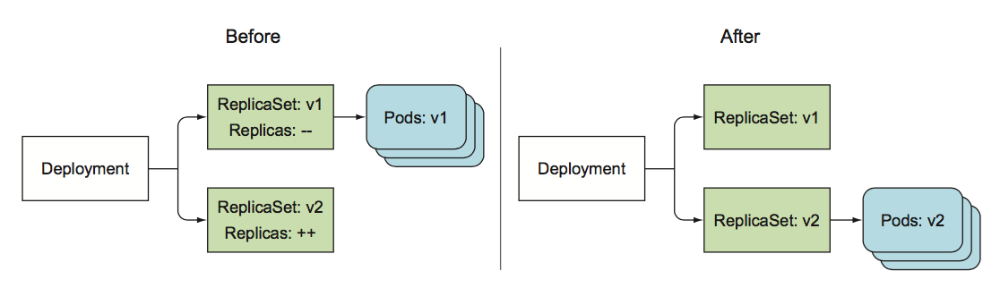

Deployment
Deployment 是一种更高级资源， 用于部署应用程序，并以声明的方式升级应用，当创建一个 Deployment 时，实际的pod是由 RS 创建和管理的，而不是由 Deployment 直接创建和管理的，如下图：
 引入 Deployment 之后，Deployment 可以在RC，RS基础之上，更容易的更新应用程序，因为可以直接定义单个 Deployment 资源所达到的状态，并让 k8s 处理中间的状态。
引入 Deployment 之后，Deployment 可以在RC，RS基础之上，更容易的更新应用程序，因为可以直接定义单个 Deployment 资源所达到的状态，并让 k8s 处理中间的状态。
创建一个 Deployment
Deployment 和RC没有区别，也是由标签选择器、副本数、pod模板组成，此外包含了一个部署策略， 该策略定义在修改 Deployment 资源时应该如何执行更新。
#deployment-v1.yaml
apiVersion: apps/v1beta1
kind: Deployment
metadata:
name: kubia
spec:
replicas: 3
template:
metadata:
name: kubia
labels:
app: kubia
spec:
containers:
- image: luksa/kubia:v1
imagePullPolicy: IfNotPresent
name: nodejs
创建该dp:
$ kubectl create -f deployment-v1.yaml --record
PS: 确保使用了 --record 选项， 因为这个选项会记录版本号， 在以后的发布更新、回滚时特别重要。 查看 dp 的状态：
$ kubectl describe deployment kubia
$ kubectl rollout status deployment kubia
deployment "kubia" successfully rolled out
了解 Deployment 如何创建rs和pod
查看pod时，你发现pod的name中多了中间一个字段：
$ kubectl get pod -o wide
kubia-5bd5dd8bf9-49cm4 1/1 Running 0 4m34s 172.30.30.11 192.168.10.242 <none>
kubia-5bd5dd8bf9-cpg2j 1/1 Running 0 4m34s 172.30.30.13 192.168.10.242 <none>
kubia-5bd5dd8bf9-hv8w8 1/1 Running 0 4m34s 172.30.30.2 192.168.10.242 <none>
该字段实际上对应的是 Deployment 和RS 中的pod版本的哈希值(pod-template-hash: 5bd5dd8bf9)，验证前文所述， Deployment 不直接管理pod，而是通过 RS 来管理pod：
$ kubectl get rs
NAME DESIRED CURRENT READY AGE
kubia-5bd5dd8bf9 3 3 3 5m5s
通过service 访问pod
RS 创建了3个pod之后， 因为pod的标签和service的标签选择器是相匹配的，因此可以通过之前的svc 访问pod，
$ curl 10.254.184.128:80
This is v1 running in pod kubia-5bd5dd8bf9-hv8w8
Deployment 升级描述
回顾 RC 的升级过程， 必须通过运行 kubectl rolling-update 显示的告诉k8s 来执行更新(让我们想起了命令式和声明式)，甚至必须为新的RC指定名称来替换旧的资源，然后k8s会创建新的pod，替换旧的pod，并在结束之后删除原有的RC， 整个过程必须不能中断，让kubectl 来主导完成滚动升级。
相反， Deployment 的方式只需要修改 Deployment 资源中的 pod 定义模板， K8S 会自动将实际的系统状态收敛为资源中定义的状态。类似于RS、RC扩缩容，升级操作需要做的就是在 Deployment 的pod模板中修改镜像的tag即可，其余的事情交给K8S。
Deployment 升级策略
- RollingUpdate策略，会渐进的删除旧pod， 与此同时创建新的pod， 使应用程序在整个更新过程中都处于可用状态，并确保其处理请求的能力没有受到影响，升级过程中，可以控制pod并发更新数量，通过设置上限和下限配置；这也是 Deployment 默认的升级策略；如果你的应用可以接受多个版本同时提供服务，推荐使用该策略；
- Recreate策略， 会一次性删除旧版本的pod， 然后创建新版本pod，如果你的应用程序不能接受多个版本同时对外提供服务，需要在启动新服务之前，停止老服务，那么推荐这种策略；
如何控制升级速度
为了在练习过程中，可以观察升级过程，我们先把调整一下滚动升级速度：
$ kubectl patch deployments. kubia -p '{"spec":{"minReadySeconds":10}}'
patch 修改dp的自有属性，并不会导致pod的任何更新，因为pod的模板并没有被修改。
触发滚动升级
触发滚动更新，只需要将 pod镜像修改为 luksa/kubia:v2 即可。但是为了观察现象，还是建议你运行如下脚本:
注意更新你自己的 cluster ip
$ while true;do curl 10.254.184.128:80;done;
更新pod 模板
$ kubectl set image deployment kubia nodejs=luksa/kubia:v2 --record
此时，DP开始滚动升级， 滚动升级开始和结束时，DP的状态如下图所示：
 同时，也可以查看新旧的 rs：
同时，也可以查看新旧的 rs：
# kubectl get rs
NAME DESIRED CURRENT READY AGE
kubia-5bd5dd8bf9 0 0 0 61m
kubia-7d9f9cc8d 3 3 3 6m36s
升级过程和 kubectl rolling-update 非常相似，一个新的RS被创建，并逐步扩容，同时旧版RS逐步缩容至0，滚动升级过程开始和结束时DP的状态： 
回滚 Deployment
我们再次进行应用升级，升级到V3版本，该版本将引入一个bug， 使你的应用程序只能处理前四个请求，以后的请求会返回500错误；部署v3版本：
$ kubectl set image deployment kubia nodejs=luksa/kubia:v3 --record
$ kubectl rollout status deployment kubia
回滚：
$ kubectl rollout undo deployment kubia
PS： 如果不指定 --record的话，CHANGE-CAUSE 字段将为空；
回滚 Deployment 到特定的版本
在回滚过程中，指定 --to-revision 选项，便可以回滚到特定的版本。比如，回滚到第一个版本：
$ kubectl rollout undo deployment kubia --to-revision=1
因为 Deployment 的RS 保存了版本号，所以不要手动删除RS，以免丢失版本信息导致无法回滚操作；
 PS 旧版本的RS过多会导致RS列表过于混乱， 可以通过指定DP的 revisionHistoryLimit 属性来限制历史版本数量。(extensions/v1beta1)默认值为2, (apps/v1beta2)默认为10；所以正常情况下在版本列表里只有当前版本和上一个版本，再往前的RS版本会被清理；
PS 旧版本的RS过多会导致RS列表过于混乱， 可以通过指定DP的 revisionHistoryLimit 属性来限制历史版本数量。(extensions/v1beta1)默认值为2, (apps/v1beta2)默认为10；所以正常情况下在版本列表里只有当前版本和上一个版本，再往前的RS版本会被清理；
$ kubectl patch deployments. kubia -p '{"spec":{"revisionHistoryLimit":10}}'
Deployment 滚动升级频率控制
Deployment 滚动升级过程中， 有两个值可以配置每次替换多少个pod：
strategy:
rollingUpdate:
maxSurge: 25%
maxUnavailable: 25%
type: RollingUpdate
- maxSurge 表示除了Deployment配置中的期望副本数之外，最多允许超出的pod实例的数量，默认值为25%；
- maxUnavailable 表示在滚动升级期间，相对于期望副本数能够允许有多少个pod实例处于不可用状态，默认为25%。所以，可用pod的实例数不能低于期望副本数的75%；
这两个值，除了设置百分比，也可以设置整数；
暂停滚动升级
假如，我们修复v3版本的bug，现在已经变成v4版本， 但是出于安全考虑，我们只希望先运行一个新版的pod，并查看一小部分用户请求的处理情况。如果一旦符合预期，就可以用新的pod，替换所有旧的pod。这相当于运行了一个金丝雀版本。金丝雀发布是一种可以将应用程序的出错版本和影响用户的风险化为最小的技术。$ kubectl set image deployment kubia nodejs=luksa/kubia:v4 --record $ kubectl rollout pause deployment kubia 恢复回滚升级 $ kubectl rollout resume deployment kubia
阻止出错版本的滚动升级
minReadySeconds的用处
指新建的pod至少运行多久之后，才能将其视为可用。在pod可用之前，滚动升级过程不会继续，如果一个pod出错了，就绪探针返回失败，并且在 minReadySeconds 的时间内就绪探针出现了失败，那么本次新版本升级将被阻止。使用就绪探针和minReadySeconds ，可以阻止我们发布v3 bug版本。
带有就绪探针部署v3
#v3-with-readinesscheck.yaml
apiVersion: apps/v1beta1
kind: Deployment
metadata:
name: kubia
spec:
replicas: 3
minReadySeconds: 10
strategy:
rollingUpdate:
maxSurge: 1
maxUnavailable: 0
type: RollingUpdate
template:
metadata:
name: kubia
labels:
app: kubia
spec:
containers:
- image: luksa/kubia:v3
name: nodejs
readinessProbe:
periodSeconds: 1
httpGet:
path: /
port: 8080
使用kubectl apply -f v3-with-readinesscheck.yaml 升级 观察升级过程：
$ kubectl rollout status deployment kubia
没有请求到达v3 pod，因为有一个pod一直没有处于就绪状态。同样是因为没有达到就绪状态，所以pod会从endpoint中移除，这就解释了为什么curl发出的请求不会切到新的pod。这是符合预期的；deployment 滚动升级因新pod未达到就绪状态而被阻止继续更新：

为滚动升级配置deadline
默认情况下， 在10分钟内不能完成升级的话， 则被视为失败，可以通过设置 spec中的progressDeadlineSeconds 来指定deadline时间。
取消出错版本升级
手动：
$ kubectl rollout undo deployment kubia
自动：
达到了 progressDeadlineSeconds: 600 指定的600s，则滚动升级会自动取消。
Deployment 总结：
- 使用rc 管理pod并进行滚动升级
- 创建和更新dp
- 回滚dp到上一版本和特定版本
- 中止和恢复 dp 升级
- 暂停dp升级，金丝雀发布
- 通过 maxSurge 和 maxUnavailable 属性控制升级的速率
- 使用 minReadySeconds和就绪探针自动避免错误版本升级
- 在一个yaml文件中使用 (---) 作为分隔符定义多个资源
- 开启kubectl 详细日志 --v n